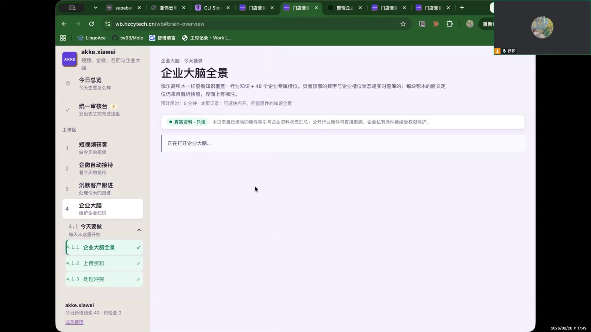
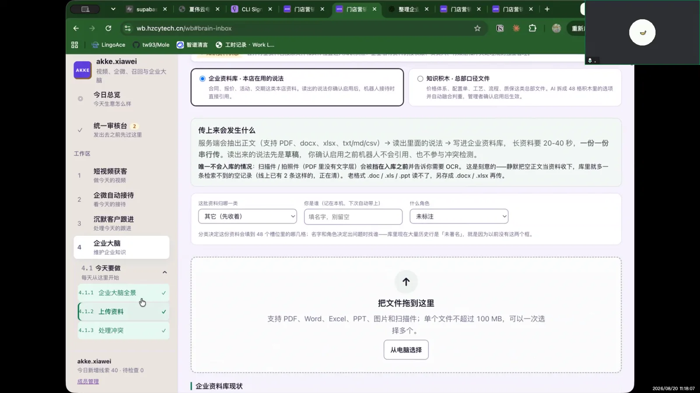
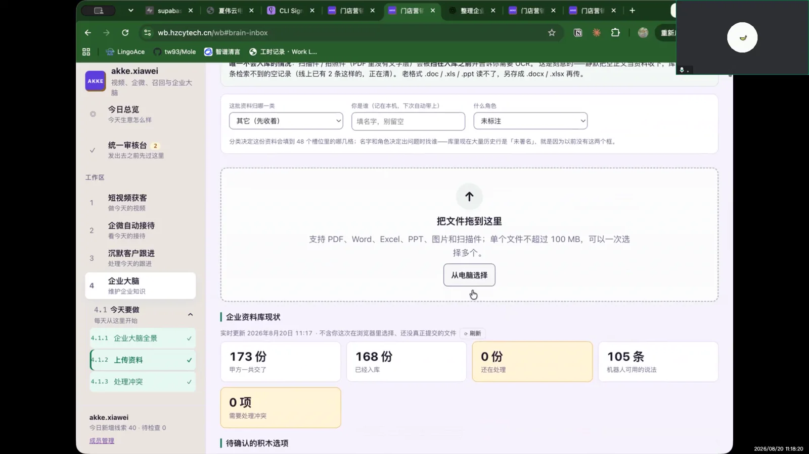
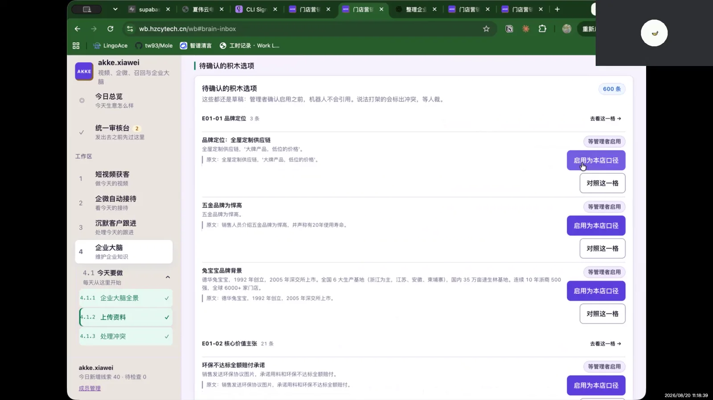

这套企业大脑好在哪里，能起什么作用
它的价值不只是“可以上传文件”，而是把散落在员工电脑、群聊和老师傅经验里的企业知识，整理成一套机器人真正能执行、门店也能持续维护的统一口径。
把个人经验变成企业资产
产品、报价、服务流程和金牌销售话术不再只存在于少数人的记忆里。资料进入企业大脑后，可以被持续整理和复用，降低人员流动带来的知识流失。
让 AI 按企业自己的口径说话
机器人不只依赖通用知识，而是以企业审核过的资料和话术作为回答依据。这样能减少答非所问、随意承诺和不同客户听到不同说法的问题。
统一标准，也保留本店差异
总部沉淀统一品牌与业务口径，门店再补充地址、活动、服务范围等本地资料。既能守住统一标准，也能让机器人回答本店真实情况。
上传不等于立即上线
资料先上传、解析和核对，再由人员确认启用；遇到冲突时可以先处理，不让未经审核的内容直接影响客户沟通。企业因此保留最终控制权。
一处更新，多处持续复用
常见问题、标准话术或政策变化只需集中维护，后续可持续服务销售接待与客户沟通，减少同一内容被反复培训、反复查找和反复解释。
知道资料现在处于哪一步
通过正在解析、待确认、存在冲突、已启用等状态，管理者能判断资料是否真正进入工作流程，而不是上传后石沉大海。
结论摘要
“从电脑选择文件”的入口符合用户预期，表层可用性没有明显障碍；但用户没有文件可传，也未点击启用，因此这段只能证明入口易理解，不能证明完整资料治理流程易用。
页面与操作逐步还原
进入浏览打开企业大脑
访谈者询问企业大脑进行了怎样的操作和使用。用户从功能理解开始回答，而不是描述已完成任务。
功能理解认为可以自行添加话术和文件
用户说“这个可以自己去加一些话术”，随后与访谈者确认这里是上传资料的入口。
入口识别知道可以拖入文件
页面中的拖拽区域传达清楚，用户能直接指出“这边可以拖进去”。
路径复述点击“从电脑”后选择文件
用户复述预期步骤：点击从电脑选择，再挑选要上传的文件。录像没有证据表明她真的选中并提交了文件。
主观判断认为上传入口无需优化
她认为“主要就是上传文件”，操作上没有明显需要优化的地方。这个评价仅覆盖入口层。
未执行没有点击“启用本店口径”
访谈者追问上传后会点击哪个动作，提到启用本店口径。用户明确回答“我是没点”，原因是没有文件要上传，只打开看了一下功能。
访谈中具体问了什么
关键画面
点击图片后使用左右按钮或键盘方向键连续查看；说明会随图片同步切换。




问题与产品建议
完整链路没有被测试
下一轮必须准备一个真实但低风险的样例文件，让用户完成选择、上传、解析、核对、处理冲突、启用和回看结果。
“上传”与“启用”是两件事
页面应明确资料上传后不会立刻影响机器人；只有审核并启用口径后才生效，同时展示生效范围与可撤回方式。
需要把处理状态变成下一步
每份资料显示正在解析、待确认、存在冲突、已启用，并为每种状态提供唯一清晰的下一步按钮。
拖拽与电脑选择符合预期
用户无需教学就能指出两种上传方式，入口信息架构是有效的，不建议为了创新改掉熟悉模式。